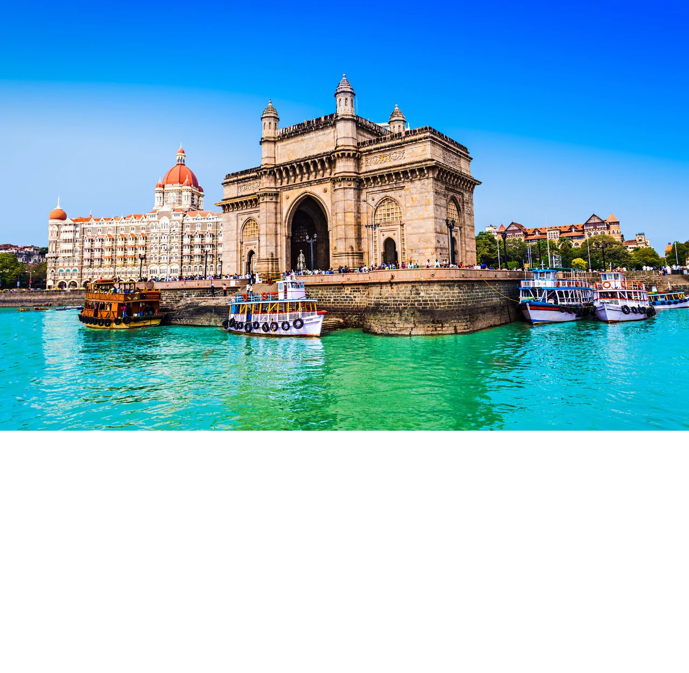
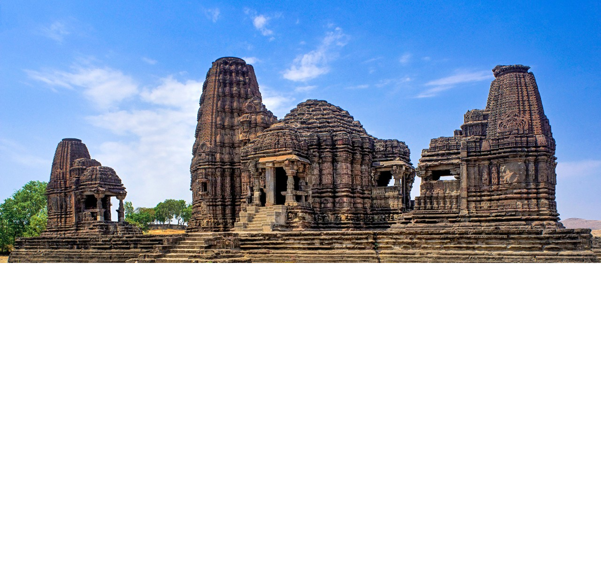
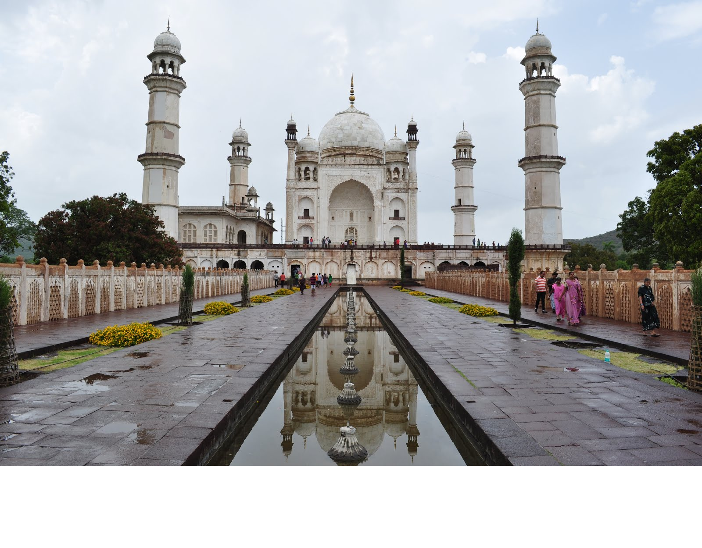

-
Mumbai (English: /mumˈbaI/, Marathi: [ˈmumbəi]; also known as Bombay /bɒmˈbeɪ/, the official name until
1995) is
the capital city of the Indian state of Maharashtra. According to the United Nations, as of 2018, Mumbai is
the
second-most populous city in the country after Delhi and the seventh-most populous city in the world with a
population of roughly 20 million. As per Indian government population census of 2011, Mumbai was the most
populous city in India with an estimated city proper population of 12.5 million living under Municipal
Corporation of Greater Mumbai. Mumbai is the centre of the Mumbai Metropolitan Region, the sixth most
populous metropolitan area in the world with a population of over 23 million. Mumbai lies on the Konkan
coast on the west coast of India and has a deep natural harbour. In 2008, Mumbai was named an alpha world
city.It has the highest number of millionaires and billionaires among all cities in India.
Mumbai is home to three UNESCO World Heritage Sites: the Elephanta Caves, Chhatrapati Shivaji Maharaj
Terminus,
and the city's distinctive ensemble of Victorian and Art Deco buildings

-
Nagpur /næɡˈpʊər/ is the third largest city and the winter capital of the Indian state of Maharashtra. It is
the 13th largest city in India by population and according to an Oxford's Economics report, Nagpur is
projected to be the fifth fastest growing city in the world from 2019 to 2035 with an average growth of
8.41%. It has been proposed as one of the Smart Cities in Maharashtra and is one of the top ten cities in
India in Smart City Project execution.Nagpur is the seat of the annual winter session of the Maharashtra
state
assembly. It is a major commercial and political center of the Vidarbha region of Maharashtra. In addition,
the
city derives unique importance from being an important location for the Dalit Buddhist movement and the
headquarters for the Hindu nationalist organization RSS. Nagpur is also known for the Deekshabhoomi, which
is
graded an A-class tourism and pilgrimage site, the largest hollow stupa among all the Buddhist stupas in the
world. The regional branch of Bombay High Court is also situated within the city.

-
Nashik (/ˈnʌʃɪk/ also called as Nasik (About this soundlisten)) is an ancient city and the largest city in
the northern region of the Indian state of Maharashtra. Situated on the banks of river Godavari, Nashik is
the
fourth largest city in Maharashtra, after Mumbai, Pune and Nagpur. Nashik is well known for being one of the
Hindu pilgrimage sites of the Kumbh Mela, which is held every 12 years.Nashik is located about 190 km
north of state capital Mumbai. The city is called the "Wine Capital of India" as more than half of India's
vineyards and wineries are located here. Around 90% of all wine produced in India comes from the Nashik
Valley.Nashik is one of the fastest growing cities in India. It has been a major industrial center in
automobile
hub.

-
Pune, known as Poona until 1978 (Marathi: [puɳe] (About this soundlisten); English:
/ˈpuːnə/),is the second largest city in the state of Maharashtra and the 7th most populous
city in India, with an estimated population of 7.4 million as of 2020. It has been ranked as "the most
livable city in India" several times. Along with the municipal corporation limits of PCMC and the three
cantonment towns of Camp, Khadki and Dehu Road, Pune forms the urban core of the eponymous Pune Metropolitan
Region (PMR).According to the 2011 census the urban area had a combined population of 5.05 million whilst
the population of
the metropolitan region was estimated at 7.4 million. Situated 560 metres (1,837 feet) above sea level on
the
Deccan plateau on the right bank of the Mutha river, Pune is also the administrative headquarters of its
namesake district.

-
Aurangabad (About this soundpronunciation (help·info)) is a city in the Indian state of Maharashtra. It is
the administrative headquarters of Aurangabad district and is the largest city in the Marathwada region.
Located on a hilly upland terrain in the Deccan Traps, Aurangabad is the fifth-most populous urban area in
Maharashtra with a population of 1,175,116. The city is known as a major production center of cotton textile
and artistic silk fabrics. Several prominent educational institutions, including Dr. Babasaheb Ambedkar
Marathwada University, are located in the city. The city is also a popular tourism hub, with tourist
destinations like the Ajanta and Ellora caves lying on its outskirts, both of which have been designated as
UNESCO World Heritage Sites since 1983. Other tourist attractions include the Aurangabad Caves,
Daulatabad Fort, Grishneshwar Temple, Jama Mosque, Bibi Ka Maqbara, Himayat Bagh, Panchakki and Salim Ali
Lake. Historically, there were 52 Gates in Aurangabad, some of them extant, because of which Aurangabad is
nicknamed as the "City of Gates". In 2019, the Aurangabad Industrial City (AURIC) became the first
greenfield industrial smart city of India under the country's flagship Smart Cities Mission.